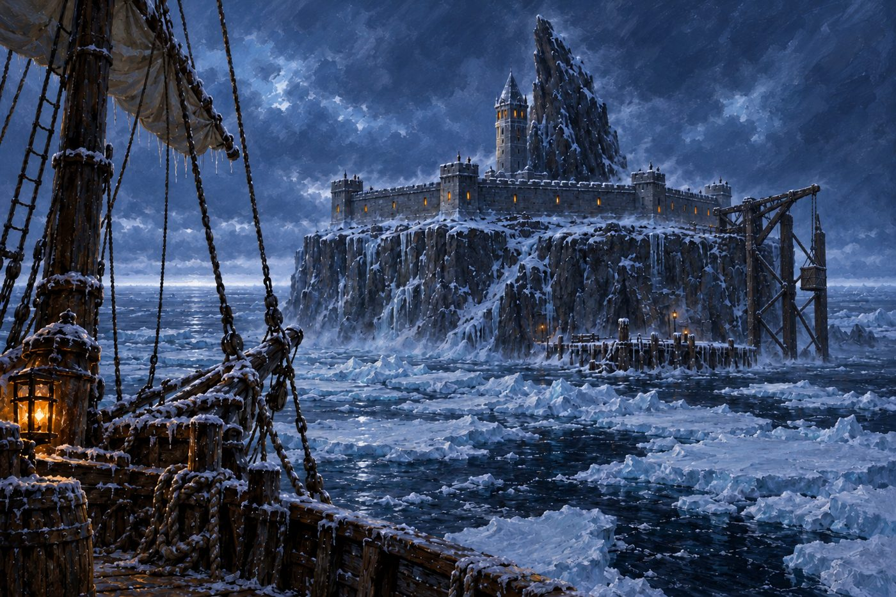
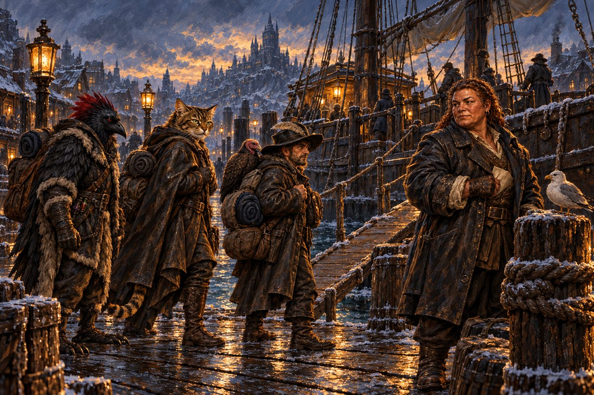

Session 8: The Silent Watch — Prisoner 13
Dates: August 1 & October 11, 2026
Location: The Cormorant · Luskan, dock eleven · the Jolly Pelican ·
Revel's End
Adventure: Prisoner 13 (Keys From The Golden Vault)

Previously...
A contract signed in a drydock cellar, a sapphire that shows a prison, four sets of genuine papers, and a knock on a warehouse door that nobody answered. The party left Varkenbluff by water before dawn, with a dwarf named Varrin Axebreaker aboard and six days of coast between them and Luskan.
Act 1: The Drillmaster
Varrin chartered the Cormorant whole and spent the passage north turning four thieves into four strangers. At the mess table, papers pinned under his knife, he drilled names, histories and the shape of a guard's day, exactly once. "Once is what you get. At the ice, once is what you got."
He fed them a wrong answer on purpose to see who would swallow it, and nobody did. He taught them that a story told twice was rehearsed, that a tell that wanders is a noose, and that the prison would tell them their position. Their job was to be the kind of guard it would tell. On the first night at sea, Blood Feather turned the sapphire in his palm until the whole of Revel's End sat behind his eyes: ring, spokes, tower, crane.
Act 2: Dock Eleven
Six days out, the Cormorant tied up at Luskan in the last of the light. Freya and Maltus were called away before the lines were fast; nobody explained, and the Pelican would not wait. At the foot of her gangplank, Kiara was waiting, and Slim with her.
Varrin opened his coat. Kess for Blood Feather. Quiet Snow, relief guard, for Kiara. Pock Merrin, galley, for Slim. "From this plank on, those are your names." He warned them about the bells, and about the people who keep them: a Warden who can't be bought, a head guard who never says a thing twice, a cook who notices who eats. And one bell in his papers was false: third bell, second watch, the north gate. "I caught it; now you know it. Never stand on it."
Bethra the fixer sent them to a slop-chandler's stall for cold-weather kit: boots first, then cloaks, then mittens. Blood Feather bought the cheap second-hand set, the way a relief guard would. Then, in a dark alley off the dock, everything worth a search went into Slim's bottle, and Blood Feather handed Varrin a bag with a rapier in it. "Payment the day the key is in my hand. Not before." Varrin went no further.

Act 3: Ten Days North
Three hammocks, chalked with three names that weren't theirs. Quiet Snow introduced herself to Sef Harlow, the mate, in her most distinguished veteran voice: Captain Quiet Snow. Harlow let it sit a moment. "Fine by me, but the title's yours to carry. Aboard the Pelican there's one captain."
Pock went to the galley and nearly lost the stew on the first heel of the deck. Kess took the deckhouse wall, arms crossed, eyes on the sea, and let nobody remember him. Then came days of galley shifts and cold watches: first rime on the rigging, a sun that stopped setting, and pack ice grinding at the hull while Skipper Kolvard held the wheel herself and waited for the leads to open. And under every rib, the second heartbeat, quickening as the ice thickened.
Then the white ahead thickened into a shape: a blade of black rock, and crouched in its lee a low six-sided fortress with a single tower, four corner towers, and a hundred and sixty feet of cliff falling to a pier and a crane.
Act 4: To the Skin
Four guards in red tunics with the gold crown met them on the iced pier, and the search went to the skin. "Kess. Arms out. Everything off but the feathers." Whatever Kess was carrying, the guard didn't find it. Quiet Snow went through clean. The guard turned Pock's bottle in his glove: galley gear, or grog? A nip or two for the cold nights. "Then you've had your nips already, it's near empty."
At the top of the crane, Head Guard Yula Dargeria took the papers. "I say things once." One question each. Kess was asked whether Serjeant Vool still ran third watch. "She retired from the watch last spring. She was tough. You don't forget that whistle." Pock refused the bait about a Roost galley: quartermaster before here. Quiet Snow was asked if she'd been navy, and said "something like that." The stylus moved, once.
Act 5: Tiny's Kitchen
The kitchen is the only room in Revel's End that feels alive, and Chef Tiny Toulaine fills its doorway. "Where you from? Do they eat fish there?" Not a lot of fish, said Pock: always running, bread and jerky. "No wonder you're the size of a ladle." Pots first, then onions, diced small for the night-watch stew.
A guard came for bread who hadn't slept. "Same dream again, the stone breathing." Behind him, in the corridor, the frost on the stone had set in a faint spiral, curling in on itself. Frost doesn't do that. Tiny laughed a little too quickly: "Frost does what it likes this far north, lad. Onions don't."
Act 6: The Silent Watch
At fourth bell the lights dimmed and the bells fell silent. A grey-bearded veteran took Kess and Quiet Snow on the round: the hexagon, four minutes, never faster. "Cells are on your inside shoulder the whole way. You look. You don't stop." "Up there they count us."
Someone muttered in his sleep in a language of hard edges. In a cell near the gate end, a compact dwarf woman in pressed greys sat awake and watched Kess. He held her eyes without breaking stride, and her tapping thumb went still. "That's Thirteen. Number, not a name. She looks at every new face like she's pricing it."
At first bell they reported the night uneventful, and drew the privy run. Kess ironed Thirteen at her own gate. "New feathers. Who taught you to look without stopping?" He gave her nothing but the irons, and told her to take her bucket. "Of course, Kess."
Act 7: Breakfast
Second bell. Pock carried the mess pot round the ring and lost a wave of porridge on the flagstones, and Yula was standing over it when he came back with the rag. "Yours. Clean it. Then don't do it again." Tiny helped him carry the next one. When Pock thanked him and called him a good boss, the big man went quiet for once. "Keepin' 'em fed's the easy part, lad. It's keepin' 'em sleepin' I can't cook for. Third one this week ain't sleepin'. Started with the night watch."
Session Summary
| Party | Kess (Blood Feather) · Quiet Snow (Capt. Kiara Tawny) · Pock Merrin (Slim Pickens) |
| Away | Freya and Maltus, called away at Luskan |
| Postings | Kess and Quiet Snow: night watch, reporting to Head Guard Dargeria · Pock: Tiny Toulaine's kitchen |
| Made it through | The search, the crane, the intake, one night watch, one privy run, one breakfast |
| Allies | Tiny Toulaine, who wants a man who thinks about other folks' sleep in his kitchen |
| Watching | Thirteen, who now knows a name · Yula Dargeria, whose stylus moved once |
| Strange | Guards who don't sleep · stone that breathes in dreams · frost that curls · a voice muttering in a language of hard edges |
Next Time...
The sun hangs on the rim of the world and doesn't set. Across the ring from the barracks, Thirteen sits with her back straight and her hands folded, waiting for a kenku called Kess to come back with a reason to stop.
“Number, not a name, so don't you go learning one.”
— a veteran of the night watch